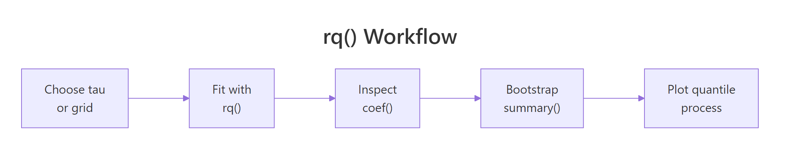
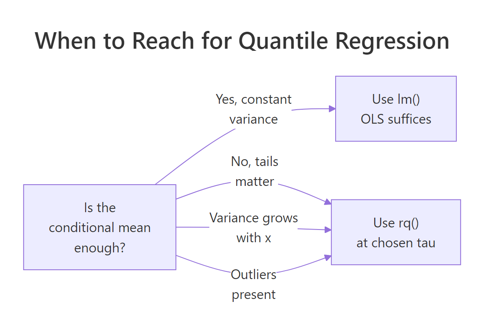
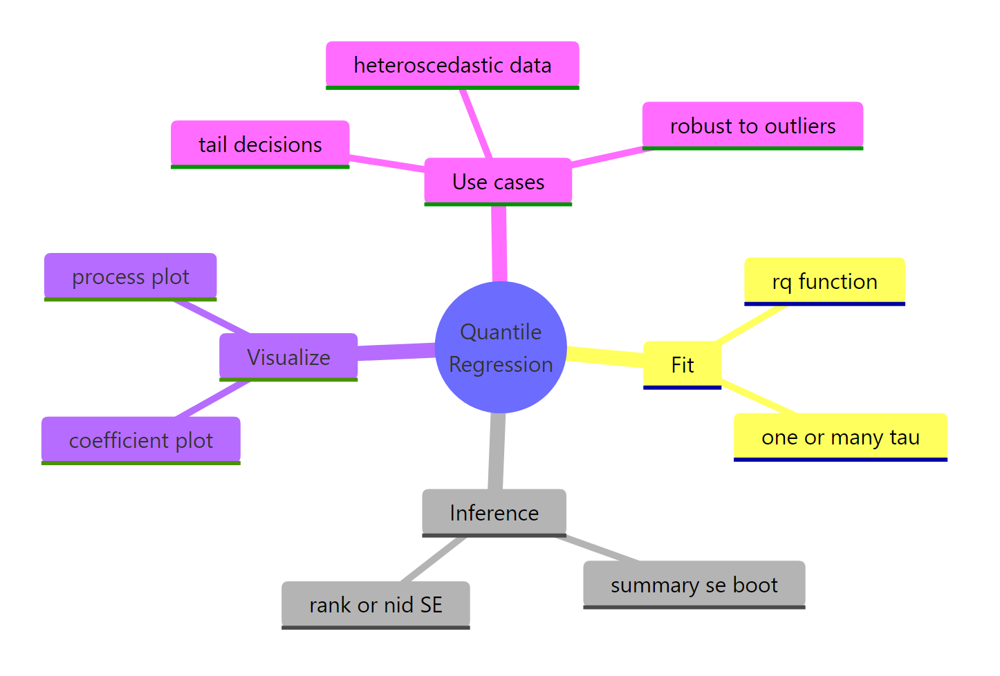

Quantile Regression in R: quantreg Package, Model Any Quantile
Quantile regression with R's quantreg package fits any conditional quantile of an outcome instead of just its mean. It exposes how predictors shift low, typical, and high responses, captures heteroscedasticity, and stays robust to outliers, all from one familiar formula interface.
What does quantile regression actually fit?
Ordinary least squares draws one line through the cloud of points, the line of conditional means. Quantile regression instead draws a line through any chosen quantile of the conditional distribution, the median, the 90th percentile, the 10th, your call. The cleanest way to see what changes is to fit both side by side on the same data.
The mean line says weight costs you 3.88 mpg per 1000 lb, while the median line says it costs 4.29 mpg. That gap is not a rounding artefact, it is the conditional distribution telling two different stories. The mean is dragged toward the few high-mpg outliers (Toyota Corolla, Fiat 128), so it understates the typical penalty. The median line tracks the typical car instead. If your decision is "what slope should I quote a buyer of an average car," the median answer is the honest one.
Try it: Fit rq() on the same mpg ~ wt + hp model at tau = 0.9 (upper tail of fuel-efficient cars) and compare the wt slope to the median's slope.
Click to reveal solution
Explanation: The 90th-percentile slope on wt is around -4.00, slightly less negative than the median's -4.29. Among the most fuel-efficient cars, weight bites a touch less hard, but heavier cars still pay a real penalty.
How does the check function turn a quantile into an optimization target?
OLS finds the line that minimizes the sum of squared residuals. That loss treats positive and negative errors symmetrically, so the solution lands on the conditional mean. Quantile regression swaps squared loss for an asymmetric absolute loss, called the check function. By tilting the penalty, the optimum shifts to any quantile you pick.
The check function for quantile $\tau$ is:
$$\rho_\tau(u) = u \cdot (\tau - \mathbb{1}(u < 0))$$
Where:
- $u$ = the residual ($y - \hat{y}$)
- $\tau$ = the target quantile, between 0 and 1
- $\mathbb{1}(u < 0)$ = 1 when the residual is negative, else 0
At $\tau = 0.5$ both positive and negative residuals get weight 0.5, which recovers least-absolute-deviations regression (the median). At $\tau = 0.9$ positive residuals get weight 0.9 and negative residuals get weight 0.1, so the optimizer pushes the line up until only 10% of points sit above it. Plotting the loss makes the asymmetry obvious.
The black V-shape is the symmetric loss that minimizes to the median. The red curve (tau=0.1) tilts so that negative residuals are penalized nine times harder than positive ones, pulling the fit down toward the lower tail. The blue curve (tau=0.9) does the reverse. Behind the scenes, rq() solves a small linear program for any tau you supply, no Newton iterations, no convergence headaches.
rq(..., tau = 0.5) is the modern, fast way to fit it.Try it: Plug a residual of -1.5 into the check function for tau=0.5 and tau=0.9. Which tau penalizes a negative residual more?
Click to reveal solution
Explanation: At tau=0.5 a negative residual of magnitude 1.5 costs 0.75. At tau=0.9 the same residual costs only 0.15 because tau=0.9 penalizes positive residuals more, the optimizer is happy to leave many points sitting below the line.
How do you interpret rq() coefficients across multiple quantiles?
A coefficient at tau = 0.9 says: "if x increases by one unit, the 90th conditional percentile of y changes by this amount." It does not describe the average car or the average household, only the one sitting at that quantile of the conditional distribution.
When slopes differ across taus, the predictor's effect is heterogeneous, it acts on low, middle, and high responders differently. When slopes are roughly constant across taus, the effect is homogeneous and OLS already tells the whole story. Feeding a vector of taus to rq() fits all of them at once.
Reading the wt row, the slope dips from -3.72 in the lower tail to -4.34 around the median, then eases back to -4.00 in the upper tail. That mild U-shape says weight bites hardest for typical cars and a touch less at the extremes. The hp row drifts more monotonically, from -0.018 to -0.034, so horsepower's penalty grows for the most fuel-efficient cars. OLS would have collapsed both stories into one number per predictor.
Try it: Extract just the hp row from fit_grid and store it as ex_hp_slope. Round to 3 decimals.
Click to reveal solution
Explanation: Indexing coef(fit)["hp", ] pulls the row you care about across every tau, the cleanest summary for a single predictor's behaviour through the distribution.
How do you compute reliable standard errors with rq()?
summary(fit) prints confidence intervals out of the box, but the method matters because heteroscedasticity breaks simple formulas. The se = argument of summary.rq() lets you choose, and the right default depends on your data.
se = |
When to use |
|---|---|
"rank" (default) |
Small n; inverts a rank test; no nuisance parameters |
"iid" |
Residuals roughly iid and roughly symmetric |
"nid" |
Near-iid under heteroscedasticity; fast asymptotic |
"boot" |
Heteroscedastic or skewed data, most robust |
"ker" |
Kernel density estimate; similar intent to "nid" |
When in doubt, bootstrap. It makes no distributional assumptions, handles heteroscedasticity naturally, and gives intervals you can defend in front of a sceptical reviewer.
The bootstrap standard error for wt is 0.84, giving a 95% interval of roughly $[-5.94, -2.63]$. That is wide, mtcars has only 32 observations, but it is honest. The rank-based default would sometimes return narrower intervals on small data, but those can undercover when the residuals are heteroscedastic, so "boot" is the safer working default once n is at least a few dozen.
Try it: Compute bootstrap standard errors for fit_med using R = 300 and seed 11. Read off the standard error of the wt slope.
Click to reveal solution
Explanation: The wt SE (~0.88) is close to the R=500 result (0.84), confirming 300 replicates already stabilize the estimate for a small dataset. Bigger R reduces Monte Carlo noise, not statistical uncertainty.
How do you read a quantile process plot?
Reading coefficients at three taus is fine, but the richer picture is a quantile process plot: one panel per predictor showing the coefficient as a continuous function of tau, with the OLS estimate as a dashed reference line and a shaded confidence band. It compresses what would otherwise be a 19-row table into a single image.
Fit rq() at a fine grid of taus, wrap the fit in summary() (bootstrap SEs recommended), then call plot().
Three panels appear, intercept, wt, and hp. The wt curve dips and recovers across tau, hovering around the OLS dashed line for most of its range, an effect that is broadly homogeneous. The hp curve drifts more steadily downward, suggesting horsepower hits the upper tail harder than the lower. A flat curve hugging the OLS line says "OLS is enough." A tilted curve, like hp here, says "quantile regression is doing real work."

Figure 1: The rq() workflow, choose tau, fit, inspect, bootstrap, then plot the process.
tau = seq(.05, .95, by = .05) or similar, not a random vector. The plot's x-axis is a density of quantile levels, not ordinal categories.Try it: Build a process plot for mtcars with cyl added as a predictor (mpg ~ wt + hp + cyl). Use the same fine grid and bootstrap SE.
Click to reveal solution
Explanation: Adding cyl produces a fourth panel. With three correlated predictors, individual quantile slopes can swing more widely; the process plot reveals which predictors carry stable effects and which depend on where you look in the distribution.
When should you reach for quantile regression instead of lm()?
Three signals tip the scale toward rq(). Tail decisions: rent caps, hospital stay limits, premium pricing care about the upper tail, not the average. Heteroscedasticity: if the spread of y grows with x, OLS reports a misleading single slope. Outliers: a few extreme y-values pull the OLS line away from the bulk of the data. The synthetic example below stresses the second signal.
The 10th-percentile slope is 1.02 and the 90th-percentile slope is 1.98, almost double. The data-generating process made residual SD scale with $0.5 + 0.4x$, so the upper tail climbs much faster than the lower tail. Quantile regression reads that off directly: the gap coef(fit)[2, "tau= 0.9"] - coef(fit)[2, "tau= 0.1"] quantifies how much faster. OLS would have reported a single slope near 1.5 and quietly hidden the spreading fan.

Figure 2: When to choose quantile regression over OLS.
Try it: Generate 200 points with constant variance (sd = 1, no x-dependence), fit rq() at tau=0.1 and tau=0.9, and verify the slopes are close.
Click to reveal solution
Explanation: Both slopes cluster near the true 1.5, so the tails climb at the same rate. Variance is constant, and quantile regression and OLS tell the same story about the conditional mean. No tail story to tell here.
Practice Exercises
Exercise 1: Weight slope across mtcars quantiles
Fit rq() on mtcars for mpg ~ wt + cyl at tau = c(0.25, 0.5, 0.75). Extract the wt slope at each tau into a named numeric vector called my_wt_slopes.
Click to reveal solution
Explanation: coef(fit)["wt", ] pulls one predictor's row across every tau, the standard idiom for cross-quantile summaries.
Exercise 2: Find the heterogeneous predictor on airquality
Fit rq() on na.omit(airquality) for Ozone ~ Solar.R + Wind + Temp at tau = c(0.1, 0.5, 0.9) with bootstrap SE (R = 300). Identify which predictor's slope changes most between the 10th and 90th percentiles, then assign the predictor name (string) to my_hetero.
Click to reveal solution
Explanation: Temperature's slope changes most across quantiles, hot days drive the upper ozone tail more than they lift the lower tail. Wind also shows large heterogeneity, but Temp wins on absolute slope difference.
Exercise 3: Verify a designed heteroscedasticity gap
Generate 300 points where the residual SD scales with x as $\sigma(x) = 0.3 + 0.5x$, fit rq() at tau=0.1 and tau=0.9, and store the difference slope(0.9) - slope(0.1) in my_gap. Compare to OLS, which collapses everything to one slope.
Click to reveal solution
Explanation: The tail gap of about 1.2 quantifies how much faster the upper tail climbs than the lower. OLS reports a single slope near 2.0 and reveals nothing about the spreading fan. Quantile regression gives a number you can act on.
Complete Example
A full airquality workflow, from cleanup to interpretation, in one runnable block.
Reading the four panels (intercept plus three predictors): Temp climbs from 0.75 at tau=0.1 to 1.92 at tau=0.9, so each extra degree lifts the upper-tail ozone more than twice as much as the lower-tail ozone. Wind tilts steeply negative in the upper tail, windy days clip the highest readings sharply. Solar.R shows modest heterogeneity, mostly a location shift. A single OLS model would have flattened these three patterns into three single numbers, missing the entire story about pollution extremes.
Summary
Key takeaways from fitting quantile regression with quantreg:
| Step | Function | Purpose |
|---|---|---|
| Fit | rq(y ~ x, tau = ...) |
Estimate one or many conditional quantiles |
| Inspect | coef(fit) |
Read slopes at each tau |
| Infer | summary(fit, se = "boot", R = 300+) |
Bootstrap SEs robust to heteroscedasticity |
| Visualize | plot(summary(fit)) |
Process plot, coefficient as a function of tau |
| Diagnose | gap between tau=0.1 and tau=0.9 slopes | Heteroscedasticity fingerprint |

Figure 3: Quantile regression at a glance, fitting, inference, visualization, and use cases.
Quantile regression earns its keep whenever the tails matter, variance shifts with predictors, or outliers corrupt OLS. For problems where the conditional mean is enough and residuals are roughly iid, lm() remains simpler and sufficient. The quantreg package goes further than rq(): rqss() adds nonparametric smoothing, crq() handles censored responses, and nlrq() fits nonlinear quantile models. All share the same tau interface you have already learned.
References
- Koenker, R. & Bassett, G. (1978). Regression Quantiles. Econometrica, 46(1), 33-50. Link
- Koenker, R. & Hallock, K. (2001). Quantile Regression. Journal of Economic Perspectives, 15(4), 143-156. Link
- Koenker, R. (2005). Quantile Regression. Cambridge University Press.
- Koenker, R. quantreg package CRAN vignette. Link
- Cade, B. S. & Noon, B. R. (2003). A gentle introduction to quantile regression for ecologists. Frontiers in Ecology and the Environment, 1(8), 412-420. Link001%5B0412:AGITQR%5D2.0.CO%3B2)
- CRAN, Package 'quantreg' reference manual. Link
Continue Learning
- Linear Regression in R, the OLS baseline that quantile regression generalizes beyond the mean.
- Outlier Treatment With R, complementary techniques when extreme observations corrupt your fit.
- Polynomial and Spline Regression in R, modelling curvature in the conditional mean before stepping up to quantile-by-quantile flexibility.